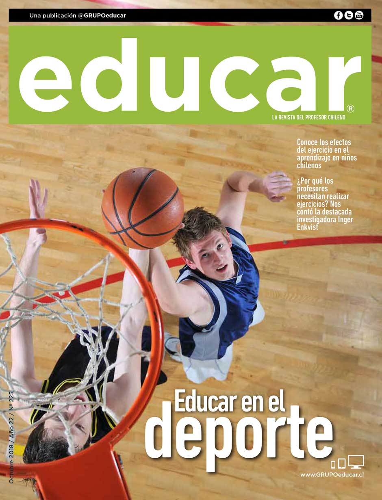

Próximos torneos poli Deportivo
¡Prepárate! Se viene el torneo intercentros el próximo mes de abril.
Promovemos la actividad física y el bienestar a través del deporte.
Próximos torneos poli Deportivo
¡Prepárate! Se viene el torneo intercentros el próximo mes de abril.
Clases de baile
clases de baloncesto
Todos los viernes a las 8 AM. ¡Te esperamos!
Dirección: poli deportivo, salon Comunal
Email: elclubdeportivo2025@sena.edu.com